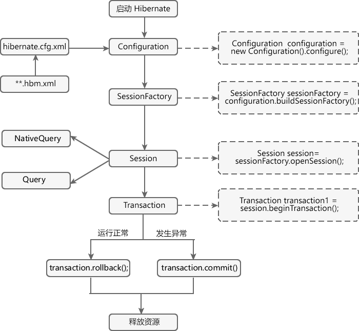

Hibernate工作原理（图解）
在 Hibernate操作数据库一节的学习中，我们主要涉及到了 Configuration、SessionFactory、Session、Transaction 和 Query 等多个接口，这些接口在 Hibernate 运行时都扮演着十分重要的角色，本节我们就来介绍以一下 Hibernate 运行时的工作原理。
Hibernate 运行时的执行流程如下图。
由上图可知，Hibernate 工作流程一般分为如下 7 步：
关于 Configuration、SessionFactory、Session、Transaction 和 Query 等接口的使用，我们会在 Hibernate 的核心接口一节中进行详细的讲解，
Hibernate 运行时的执行流程如下图。

图1：Hibernate 工作流程图
图1：Hibernate 工作流程图
由上图可知，Hibernate 工作流程一般分为如下 7 步：
- Hibernate 启动，Configruation 会读取并加载 Hibernate 核心配置文件和映射文件钟的信息到它实例对象中。
- 通过 Configuration 对象读取到的配置文件信息，创建一个 SessionFactory 对象，该对象中保存了当前数据库的配置信息、映射关系等信息。
- 通过 SessionFactory 对象创建一个 Session 实例，建立数据库连接。Session 主要负责执行持久化对象的增、删、改、查操作，创建一个 Session 就相当于创建一个新的数据库连接。
- 通过 Session 对象创建 Transaction（事务）实例对象，并开启事务。Transaction 用于事务管理，一个 Transaction 对象对应的事务可以包含多个操作。需要注意的是，Hibernate 的事务默认是关闭的，需要手动开启和关闭。
- Session 接口提供了各种方法，可以对实体类对象进行持久化操作（即对数据库进行操作），例如 get()、load()、save()、update()、saveOrUpdate() 等等，除此之外，Session 对象还可以创建Query 对象 或 NativeQuery 对象，分别使用 HQL 语句或原生 SQL 语句对数据库进行操作。
- 对实体对象持久化操作完成后，必须提交事务，若程序运行过程中遇到异常，则回滚事务。
- 关闭 Session 与 SessionFactory，断开与数据库的连接，释放资源。
关注公众号「站长严长生」，在手机上阅读所有教程，随时随地都能学习。内含一款搜索神器，免费下载全网书籍和视频。

微信扫码关注公众号